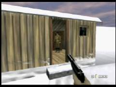
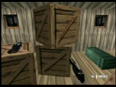
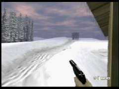
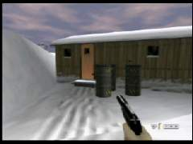
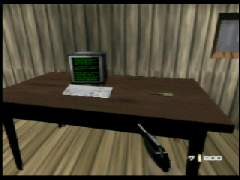
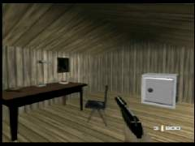
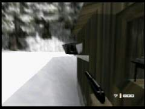

Le Premier Niveau auquel j'ai joué, et je le trouve toujours très bien ! Musique superbe, ennemis bien habillés, décor bien beaux... C'est parti ! Empruntez le Chemin tout droit jusqu'a ce que vous arriviez à une croisement, avec 2 Barraques de chaque coté. Celle de droite est un bon repère avec les 3 Barils. Contournez cette Baraque par la Gauche, et vous verrez au loin une Mini-Tourelle. Continuez tout droit et bien droit et vous arriverez à une Barraque. Cette Barraque contient une Général qui a une Clé sur lui...





La Clé du Coffre : Secret Agent / 00 Agent
Une fois revenu à la Barraque aux Barils, allez vers la Barraque EN FACE de celle-ci. Avec la Clé du Général, vous pourrez entrer dedans, et ainsi récuperer la Clé du Coffre. Revenez au Croisement, et continuez le Chemin tranquille tout droit... Vous passerez devant le Mini-Observatoire sur votre Gauche, et verrez au Loin la Gigantesque Antenne Radar comme sur le Picto de la Mission.



Les Plans du Bunker : Secret Agent / 00 Agent
Une fois l'Antenne visible, vous verrez sur votre Gauche des Barraques. Allez vers elles, et vous trouverez 2 Barraques. L'une d'elles contient le Coffre, qui renferme les Plans du Bunker. Ouvrez le Coffre, chopez les Plans, et voilà. Y a encore 2 autres Barraques si vous continuez votre chemin, mais y a rien dedans à part une Camera qui peut vous attirer des ennuis (surtout en 00 Agent).





Eteindre le Radar : Tous Niveaux
Revenez vers l'Antenne, et entrez dedans. Montez les escaliers et prenez la Porte en face de vous.

Entrer dans le Bunker par le Systeme de Ventilation : Tous Niveaux
Sortez du Batiment et prenez tout droit. Vous verrez au bout d'un moment sur votre Gauche une sorte de Puit, c'est çà ! Avec une Grenade, vous ruinerez les 4 Cadenas d'un Coup. Si vous voulez, vous pouvez vous les faires tous à la Main. Comme vous voulez. Entrez dans le Puits, et c'est bon !


Pour ceux qui aiment faire n'importe quoi, voilà mes conseils. Allez au Bunker et essayer d'entrer en cliquant le Digicode. Alarme ! Bien fait pour vous... Il y a aussi une Camera sur le Mur à l'exterieur de la Toute Dernière Barraque ! Cool ! En fait, donner l'Alarme ne changera rien au Niveau, mais c'est plus marrant, y aura plus de monde qui vous coursera (moins marrant en 00 Agent)...

